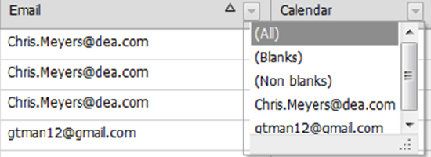

You use the functions in the Subscriptions area to manage all active subscriptions to the calendars in Master Calendar. Managing subscriptions consists of searching for and viewing all active subscriptions, exporting all active subscriptions to a file, and deleting active subscriptions.
1. On the Admin menu, point to Site Administration > Subscriptions. The Subscriptions page opens, listing all currently active subscriptions to all calendars in Master Calendar.
2. Optionally, do one or more of the following:
• To search for specific subscriptions by the subscriber’s email address, enter a partial or complete search string in the Email field, and then click Go. The search is limited to the exact order of characters in the search string, however, the string is not-case sensitive and it can appear anywhere in the search results. For example, if you enter “Rob” as your search string, search results can include Robert.Smith@emssoftware.com, MRobertson@gmail.com, and so on. All the subscriptions that meet your search criteria are displayed on the Subscriptions page.
• To group the display by a column header, drag the column to the indicated location at the top of the Subscriptions page.
• To change the sort order of the display, click on a column header. Click on the column header again to reverse the sort order.
• To filter the display, click on the Dropdown arrow next to a column header to open a list of all available values for the column, and select a specific value.

• To export the subscriptions to a PDF file or a Microsoft Excel file (CSV or XLS), under Format, select the appropriate Export option, and then click Export. A File dialog box opens, asking you if you want to open or save the file. If you click Open, then the file is opened in the appropriate application (Adobe Acrobat or Reader for a PDF or Microsoft Excel for a CSV or XLS file) and you can use the options that area available in these applications to name and/or save the file. If you click Save, then you are prompted to name the file (the default name is subscriptionsGrid.pdf, subscriptionsGrid.csv, or subscriptionsGrid.xls) and you must select a location for saving the file. (The default location is your client’s Desktop.)

Page tags: article:topic